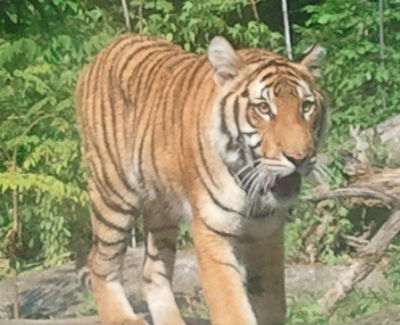
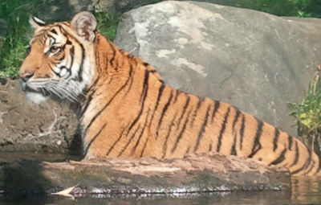

Save the Tiger!
 Poaching is probably the oldest threat that the tiger has faced in its entire existence. Poaching is the act of hunting wild animals illegally. For hundreds of years motivation for the hunted tiger has been recreation and shielding livestock. The poaching business is lucrative and rewarding for some people.
 A poached tiger could go for about "$100,000" on the black market (Sinha). Poachers come about for many different reasons: the tiger's skin and bones are an extraordinary prize for some wealthy people and impressive to observe. Another motivation for poaching is that "Traditional Chinese Medicine practiced all over the world, in London, New York and San Francisco as well as the back streets of Shanghai- uses ground tiger bone as an analgesic (Mills)."
 Most of the entire Chinese population performs
Traditional Chinese Medicine for which tiger body parts are necessary. The user of these ancient
techniques needs to find suppliers who "may be organized poaching gangs that deliberately hunt
tigers or simply local villagers who sometimes opportunistically shoot or poison tigers in their
neighborhoods (Karanth)." The high demand of the tiger's body parts gives poachers
incentive to hunt down tigers.
Most of the entire Chinese population performs
Traditional Chinese Medicine for which tiger body parts are necessary. The user of these ancient
techniques needs to find suppliers who "may be organized poaching gangs that deliberately hunt
tigers or simply local villagers who sometimes opportunistically shoot or poison tigers in their
neighborhoods (Karanth)." The high demand of the tiger's body parts gives poachers
incentive to hunt down tigers.
There are many ways in which these poachers hunt tigers. The indigenous tribes that reside in Asia have been on the hunt for tigers for centuries. In the past they would use their familiarity with the beast's behavior and understanding of their land. They enforced the use of "cooperative hunting," hunting in a group in order to ambush a tiger (Karanth). These techniques quickly disappeared once the firearm was introduced. As soon as guns became easily available to the locals it was a much easier task to kill a tiger. A tiger's strength comes from its paws and teeth, therefore, when a man uses a firearm to shoot a tiger, the latter is rendered completely harmless and out of reach of retaliation.
As of late poachers have structured squads as they pass illegally through protected tiger reserves. The poaching of a tiger is punishable by law. Yet many of the offenders do not serve their sentences and return to their crimes since the lawsuits are more often than not, are adjourned.